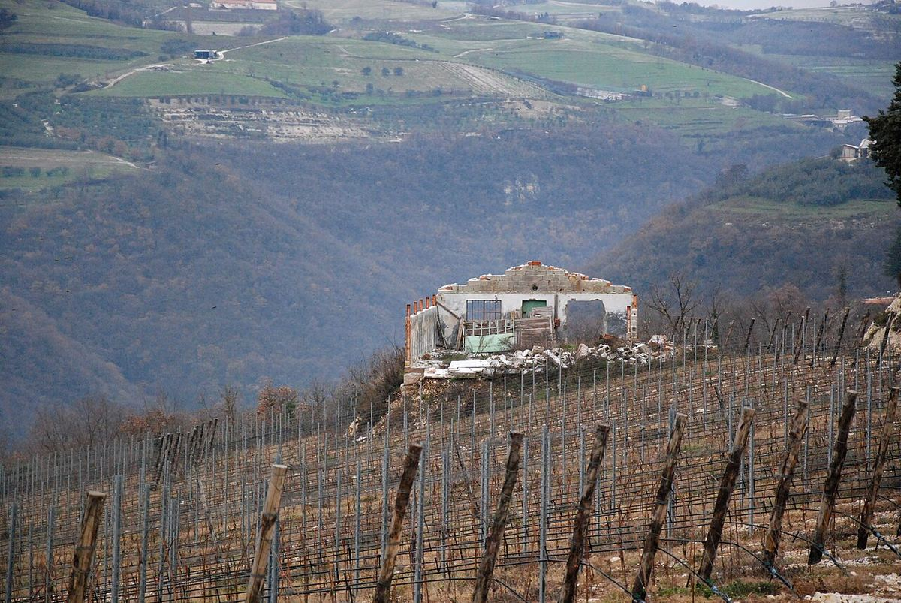

RED
Valpolicella, in the hills north of Verona, produces Corvina-based reds ranging from young Valpolicella to Ripasso and wines from dried grapes: the dry Amarone and the sweet Recioto, both DOCG.

The hills north of Verona have a long tradition of vine-growing, and the making of sweet wines from grapes dried after the harvest is documented as far back as late antiquity. This tradition gave rise to Recioto, the area's historic sweet wine. Amarone, its dry counterpart, was developed and marketed from the mid-twentieth century; its name refers to its amaro, meaning bitter or not sweet, character, in contrast to Recioto. The Valpolicella DOC was recognised in 1968, and in 2010 Amarone della Valpolicella and Recioto della Valpolicella were granted DOCG status, while Valpolicella Ripasso received a DOC of its own.
The area extends over the valleys and hills that descend from the Lessini mountains towards the Adige plain. Valpolicella Classica, the historic core, comprises the municipalities of Fumane, Marano di Valpolicella, Negrar di Valpolicella, San Pietro in Cariano and Sant'Ambrogio di Valpolicella; to this are added the Valpantena valley and a larger eastern area. The climate is moderately continental: the Lessini shield the area from cold northerly winds, and nearby Lake Garda softens temperatures in the western sector.
The soils combine limestone and marl in the hills, deposits of volcanic origin, particularly basalt, in some eastern valleys, and alluvial and morainic soils lower down. Many hillside vineyards are cultivated on terraces supported by dry-stone walls known as marogne.
Corvina is the main variety, contributing cherry aromas and fresh acidity. It is joined by Corvinone, with larger bunches and berries, Rondinella and, to a lesser extent, Molinara and other local varieties. The vines are traditionally trained on the Veronese pergola, although trellis systems have also spread.
Valpolicella is a light- to medium-bodied red with red fruit and good acidity; the Superiore designation indicates higher alcohol and longer ageing. For Amarone and Recioto, the best grapes are left to dry for several months in ventilated lofts called fruttai, which concentrates sugars and aromas; Amarone is fermented to dryness and gives a powerful, high-alcohol red with notes of dried fruit, cherries in liqueur and spice, whereas in Recioto fermentation stops and the wine keeps its sweetness. Ripasso is made by refermenting Valpolicella on the pomace of Amarone or Recioto, giving it more body and complexity.